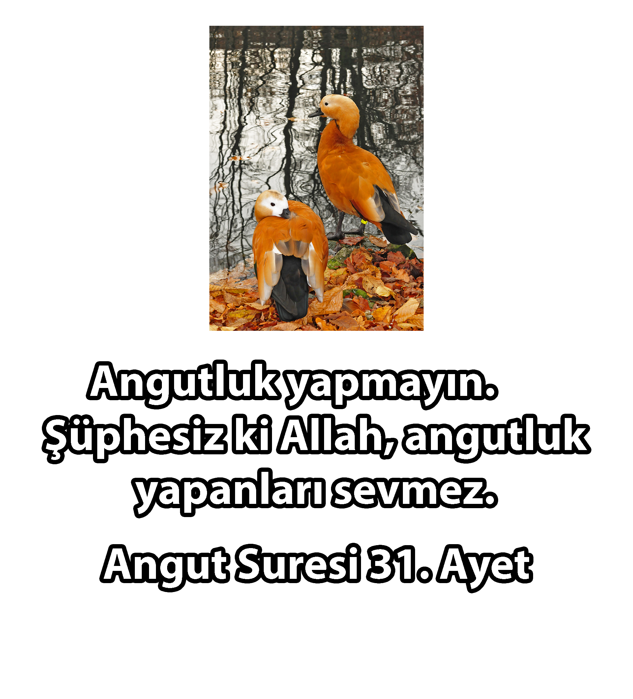

Ana Sayfa
Yobaz Tokatlama
Discord Sunucumuz
SSS
İletişim
Giydirmecenin olayı, dünyanın her yerinde aynı zırvaları döndüren gelenekçi, dindar, cahil yobaz kesimlerin sundukları gülünç argümanlara cevap vermektir. Neden mi? Çünkü canımız sıkıldı ve birazcık angut avlamak istedik.
Evrim inkarcısı müslümanların argümanlarına cevap
"Tuzlu suda mercan yetişir mi? Denizler birbirine karışır mı karışmaz mı?" draması
Ayın ikiye bölündüğüne dair bilimsel kanıtların olduğu iddiası
